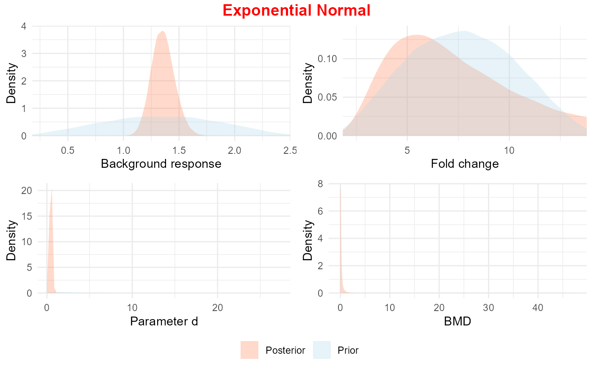
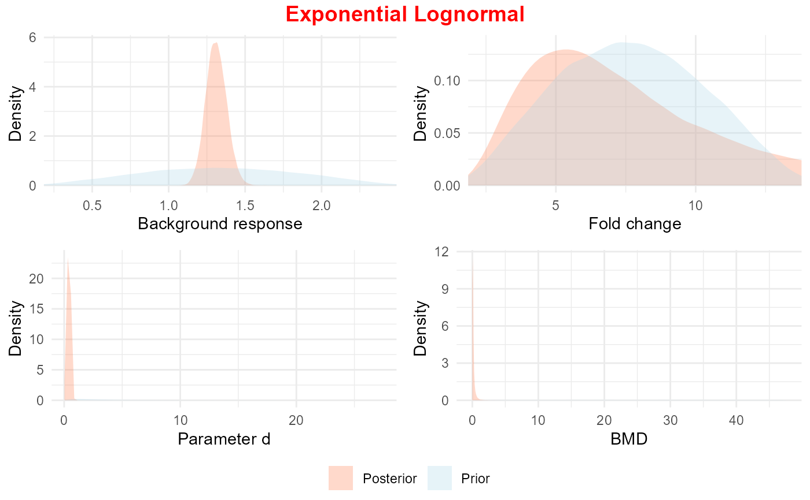

R/plot_prior.R
plot_prior.RdPlot function for the prior and posterior distribution of model parameters
plot_prior(mod.obj, data, model_name, parms = TRUE, clustered = FALSE)
plot_priorQ(mod.obj, data, model_name)BMDBMA model object
data list obtained using PREP_DATA_N or PREP_DATA_LN
name of the model whose parameters are to be plotted (one of get_models())
logical indicating if fold change (T, default) or maximum response (F) should be plotted
logical indicating whether the data are clustered (T) or not (F, default)
object of class ggplot
data_N <- PREP_DATA_N(data = as.data.frame(immunotoxicityData[1:5,]), sumstats = TRUE, sd = TRUE, q = 0.1)
#> distributional assumption of constant variance is met, Bartlett test p-value is 0.0527
#> GAMLSS-RS iteration 1: Global Deviance = -35.5626
#> GAMLSS-RS iteration 2: Global Deviance = -35.5626
#> Warning: the data do not contain information on the asymptote, and the default prior for fold change has been based on 3 times the observed maximum;
#> please provide prior input on the maximum response by specifying 'maxy', if available
#> default prior choices used on background
#> default prior choices used on fold change
#> default prior choices used on BMD
#> GAMLSS-RS iteration 1: Global Deviance = -38.2921
#> GAMLSS-RS iteration 2: Global Deviance = -38.2921
#> Warning: The origing of the x variable has been shifted by 1e-14
#> Warning: The origing of the x variable has been shifted by 1e-14
data_LN <- PREP_DATA_LN(data = as.data.frame(immunotoxicityData[1:5,]), sumstats = TRUE, sd = TRUE, q = 0.1)
#> distributional assumption of constant variance (on log-scale) is met, Bartlett test p-value is 0.6799
#> GAMLSS-RS iteration 1: Global Deviance = -35.5626
#> GAMLSS-RS iteration 2: Global Deviance = -35.5626
#> Warning: the data do not contain information on the asymptote, and the default prior for fold change has been based on 3 times the observed maximum;
#> please provide prior input on the maximum response by specifying 'maxy', if available
#> default prior choices used on background
#> default prior choices used on fold change
#> default prior choices used on BMD
#> GAMLSS-RS iteration 1: Global Deviance = -38.2921
#> GAMLSS-RS iteration 2: Global Deviance = -38.2921
#> Warning: The origing of the x variable has been shifted by 1e-14
#> Warning: The origing of the x variable has been shifted by 1e-14
FLBMD <- full.laplace_MA(data_N,data_LN)
#> Warning: non-zero return code in optimizing
#> Error in chol.default(-H) : the leading minor of order 5 is not positive
#> Warning: non-zero return code in optimizing
#> Error in chol.default(-H) : the leading minor of order 5 is not positive
#> Warning: BMDU/BMDL is larger than 50
#> Warning: Best fitting model fits sufficiently well (Bayes factor is 1.50e-01).
plot_prior(FLBMD, data_N$data, 'E4_N')
#> Warning: Removed 20167 rows containing non-finite outside the scale range
#> (`stat_density()`).

plot_prior(FLBMD, data_LN$data, 'E4_LN')
#> Warning: Removed 20127 rows containing non-finite outside the scale range
#> (`stat_density()`).
